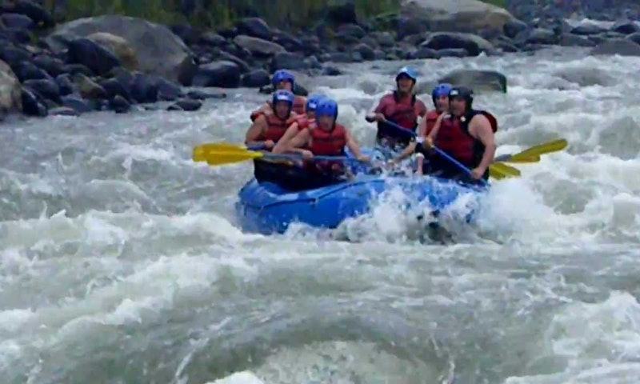

Slogan: Vivir al Maximo.


Baños - Deporte Extremo

Ubicada en un valle de cascadas y manantiales de aguas termales, Baños se ha convertido en una suerte de Meca para los turistas internacionales que buscan climas templados en los Andes. Con su cercanía a Quito, su atmósfera pueblerina y una situación geográfica privilegiada que le permite servir de base para incursiones a los parajes naturales que la rodean, Baños ofrece a sus visitantes un amplio rango de opciones turísticas: aguas termales, cabalgatas, caminatas, rafting, ascensiones, y ciclismo de montaña, entre otras. También ofrece un accesos fácil y rápido hacia distintos como: Riobamba, (desde donde sale el ferrocarril hacia la Nariz del Diablo); la Costa y Puyo, en el Oriente. Baños es, literalmente, una puerta abierta hacia el Oriente ecuatoriano.
Perfil del Autor
El diseño web es una actividad que consiste en la planificación, diseño, implementación y mantenimiento de sitios web. No es simplemente la implementación del diseño convencional ya que se abarcan diferentes aspectos como el diseño gráfico web, diseño de interfaz y experiencia de usuario, como la navegabilidad, interactividad, usabilidad, arquitectura de la información; interacción de medios, entre los que podemos mencionar audio, texto, imagen, enlaces, video y la optimización de motores de búsqueda. A menudo muchas personas trabajan en equipos que cubren los diferentes aspectos del proceso de diseño, aunque existen algunos diseñadores independientes que trabajan solos.